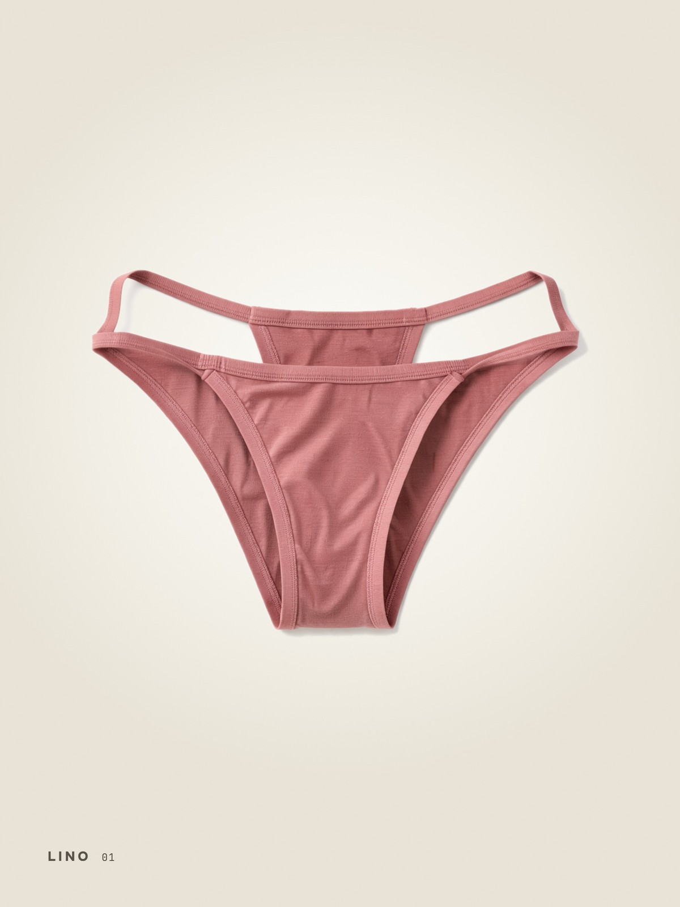

Одежда
Бельё
Задача. Снять два страха категории: «видно под одеждой» и «натирает».
Что сделал. Лямки 8 мм, хлопок 95 % с эластаном, ластовица без синтетики, сетка S–XL.
Результат. Размер, ткань и посадка видны без открытия описания.